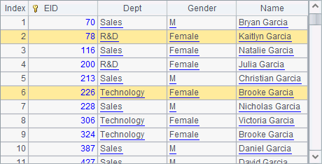
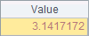
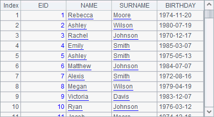
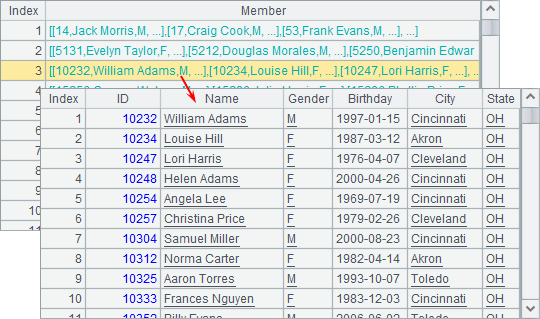

10.3.3 Handling computation-intensive tasks
In the previous examples, cluster computing is used to handle data-intensive computational tasks. By processing part of the data in each process, it makes the most use of the limited memory. In other scenarios, the task involves extremely complicated computation that can also be split apart through cluster computing into multiple subtasks that will be distributed among multiple nodes for execution. Results of the subtasks will be merged by the main node.
Take the following subroutine CalcPi.dfx as an example:
|
|
A |
B |
C |
|
1 |
1000000 |
0 |
>output@t("Task "+ string(arg1)+ " start...") |
|
2 |
for A1 |
=rand() |
=rand() |
|
3 |
|
=B2*B2+C2*C2 |
|
|
4 |
|
if B3<1 |
>B1=B1+1 |
|
5 |
>output@t("Task "+ string(arg1)+ " finish.") |
return B1 |
|
Parameter arg1 is used to record serial numbers of subtasks:

This subroutine is created to estimate the value of ¦Ð - ratio of circumference to diameter - using probability theory. Look at the following picture:

There is the quarter-circle in a square with side length of 1. The area of the square is 1 and the area of the sector is ¦Ð/4. The probability of a point of the square that falls in the sector is the ratio of their areas, i.e.¦Ð/4. This subroutine randomly generates 1,000,000 points whose x, y coordinates are within the interval [0,1), computes the distance of each of these points from the origin, records the number of points that fall in the sector and then estimates the value of ¦Ð.
Here¡¯s the main program:
|
|
A |
B |
|
1 |
[192.168.1.112:8281, 192.168.1.112:8281, 192.168.1.112:8283] |
20 |
|
2 |
CalcPi.dfx |
=movefile@cy(A2;"/", A1) |
|
2 |
=callx(A2, to(B1);A1) |
=A3.sum()*4/(1000000d*B1) |
Start node ¢ó first and its main path is D:/files/node3. The above code, before calling the node, first copies the necessary script file onto all nodes using movefile() function that uses @c option and @y option to disable deletion of the source file and enable overwriting a namesake file. By invoking the subroutine 20 times, the cluster computing distributes the computations of 20,000,000 points among processes (they are those used in the previous section). Distribution and execution information of the tasks can be viewed on each clustered server¡¯s System Output window:



If the number of tasks exceeds the maximum task number the nodes can handle and processes on all nodes have already received their tasks, the subsequent tasks need to wait to be distributed until a process is available. In this case a task will be given to any idle process, so distribution solutions may vary. Each task computation process is independent. A task distributed later than another one may be accomplished earlier, which will not affect the final result of cluster computing.
The approximate value of ¦Ð is computed in B2. Because the computation is performed based on probability, results are slightly different from each other.
